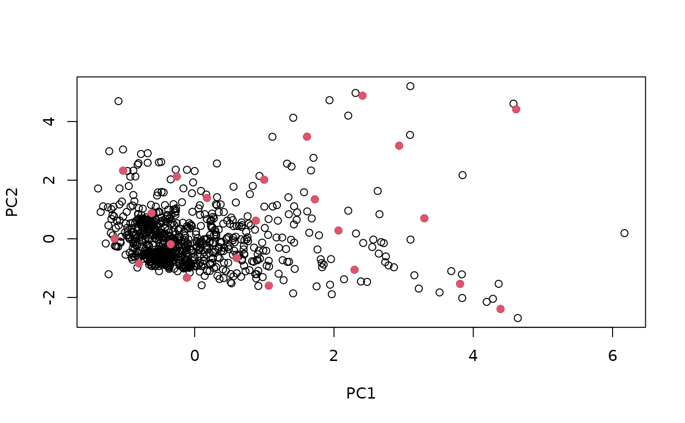
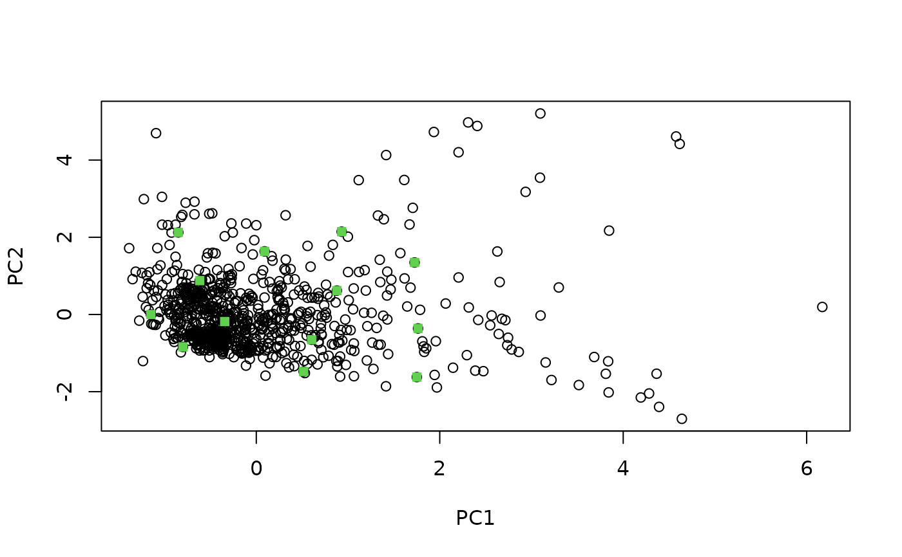

Select calibration samples from a large multivariate data using the SELECT algorithm as described in Shenk and Westerhaus (1991).
shenkWest(X,
d.min = 0.6,
pc = 0.95,
rm.outlier = FALSE,
.center = TRUE,
.scale = FALSE)a numeric matrix (optionally a data frame that can be coerced to a numerical matrix).
a minimum distance (default = 0.6).
the number of principal components retained in the computation
distance in the standardized Principal Component space (Mahalanobis distance).
If pc < 1, the number of principal components kept corresponds to the
number of components explaining at least (pc * 100) percent of the total
variance (default = 0.95).
logical. If TRUE, remove observations with a standardized
mahalanobis distance to the center of the data greater than 3
(default = FALSE).
logical. Indicates whether the input matrix should be centered
before Principal Component Analysis. Default set to TRUE.
logical. Indicates whether the input matrix should be scaled
before Principal Component Analysis. Default set to FALSE.
a list with components:
'model': numeric vector giving the row indices of the input data
selected for calibration
'test': numeric vector giving the row indices of the remaining
observations
'pc': a numeric matrix of the scaled pc scores
The SELECT algorithm is an iterative procedure based on the standardized Mahalanobis distance between observations. First, the observation having the highest number of neighbours within a given minimum distance is selected and its neighbours are discarded. The procedure is repeated until there is no observation left.
If the rm.outlier argument is set to TRUE, outliers will be removed
before running the SELECT algorithm, using the CENTER algorithm of
Shenk and Westerhaus (1991), i.e. samples with a standardized Mahalanobis
distance >3 are removed.
Shenk, J.S., and Westerhaus, M.O., 1991. Population Definition, Sample Selection, and Calibration Procedures for Near Infrared Reflectance Spectroscopy. Crop Science 31, 469-474.
data(NIRsoil)
# reduce data size
NIRsoil$spc <- binning(X = NIRsoil$spc, bin.size = 5)
sel <- shenkWest(NIRsoil$spc, pc = .99, d.min = .3, rm.outlier = FALSE)
plot(sel$pc[, 1:2], xlab = "PC1", ylab = "PC2")
# points selected for calibration
points(sel$pc[sel$model, 1:2], pch = 19, col = 2)

# without outliers
sel <- shenkWest(NIRsoil$spc, pc = .99, d.min = .3, rm.outlier = TRUE)
plot(sel$pc[, 1:2], xlab = "PC1", ylab = "PC2")
# points selected for calibration
points(sel$pc[sel$model, 1:2], pch = 15, col = 3)
